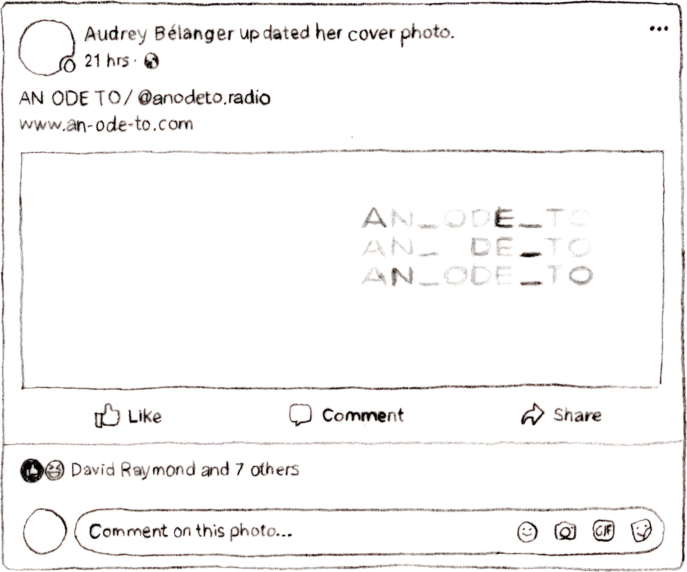
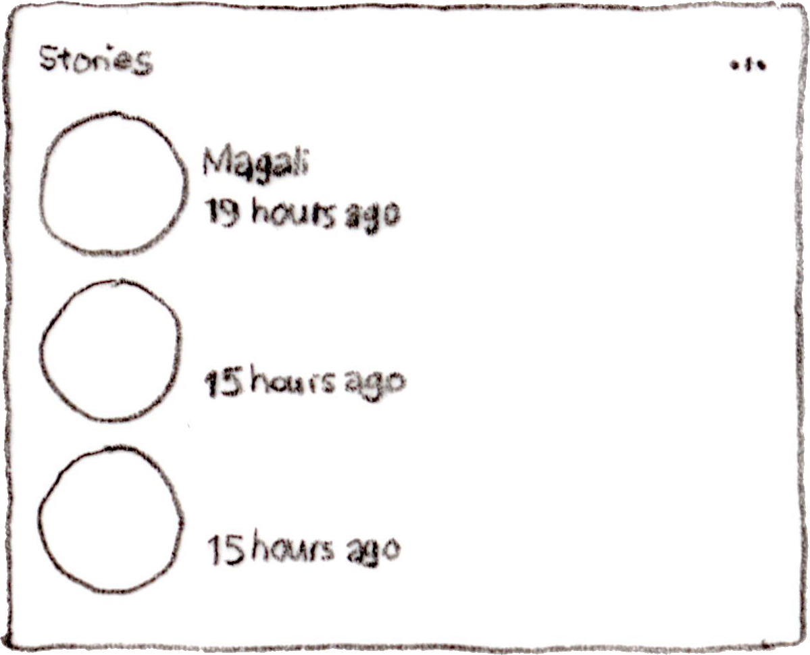

<form INFORMATION ABOUT WEBSITE>
  <!-- ************************************************************************

  DART 450, Winter 2018
  BrutalBook
  Sévan Belleau

  Brutalist Websites
  –
  In its ruggedness and lack of concern to look comfortable or easy,
   Brutalism can be seen as a reaction by a younger generation to the lightness,
   optimism,
  and frivolity of today's web design.
  –
  This is the definition given by the website brutalistwebsites.com on what brutalist websites are.
  The way I perceive it is that they remove all fluff and experiment with user interaction.
  Either by making things extremely simple or sometimes by making them incredibly overloaded.
  There is no right or wrong in brutal websites but there is exploration. This is where
  BrutalBook is born, in the middle of a love story between doubt and discovery.


  We all live with social media, or at least the vast majority of us do and while we use it we rarely question how it is fed to us. Because of the constant stream of information, we often forget to think about the container in which this information is being served to us. Why is it this way? If I had to reflect on the social media I use there would be Facebook, Instagram, Tumblr, Youtube and Reddit. All websites that use a lot of squares and rectangles to encapsulate their information and all websites that display information linearly, from top to bottom. Arguably Instagram has been trying things by changing the order of the elements displayed and removed the chronology of elements but most often, newest is highest and most popular is shown again and again.

  BrutalBook will expose the structure of Facebook. It will abstract the elements shown and allow the user to unlock the ability to modify the frame in which he/she/they exist and interact. By removing pictures, names and any elements that might remind us of the people we know posting and therefore clouding our judgement about the frame/container itself, it will attempt to show how un-natural this method of display is and how one might change it. It is an exploration into play, into brutalism and most importantly into code.

  ************************************************************************ -->
</form>

<!DOCTYPE html>

<html lang="en">

<head>

  <meta http-equiv="content-type" content="text/html; charset=utf-8">

  <title>BrutalBook</title>

  <link rel="stylesheet" type="text/css" href="css/style.css" />

  <!-- Include jQuery via the CDN -->
  <script src="https://ajax.googleapis.com/ajax/libs/jquery/3.2.1/jquery.min.js"></script>

  <!-- Uncomment the lines below to include jQuery UI -->
  <link rel="stylesheet" href="https://ajax.googleapis.com/ajax/libs/jqueryui/1.12.1/themes/smoothness/jquery-ui.css">
  <script src="https://ajax.googleapis.com/ajax/libs/jqueryui/1.12.1/jquery-ui.min.js"></script>

  <!-- Include the script file -->


</head>

<!-- Comment about the body of the HTML -->

<body>
<!-- <div class=""></div> -->
  <!-- HTML specifying the webpage goes here -->


<form Top Comments>
  <!-- The blue bar needs to be removed/ drawn
  There should be an input field for the searchBar -->
</form>
<div id="allTopThings">
<div class="blueBar"></div>
      <div class="facebookBackground"></div>
      
      
    </div>
  </div>


<form Left Comments>

</form>
<div id="allLeftThings">
  <div class="leftSide">
    
  </div>
</div>


<form Middle Comments>
  <!-- Div must be shaped to the middle section
  All elements must be made relative and not absolute -->

</form>
<div id="allMiddleThings">

  <div class="middle">
    <div class="make" id="make">
      
      <form class="firstInput" id="postForm">
        <input type="text" name="post" class="onYourMind" placeholder="What's on your mind?" id="postInput">
        <button type="button" id="submitButton" class="submitButton"></button>
      </form>
    </div>


    


    
    
    
    
    

  </div>
</div>


<form Right Comments>
  <!-- Stories could be added if time allows for it
  Privacy easter egg could be fun
  Birthday section could be created to link to Famous birthday website
   -->
</form>
<div id="allRightThings">
  <div class="rightSide">
    
    
  </div>

<script src="js/script.js"></script>

</body>

</html>
